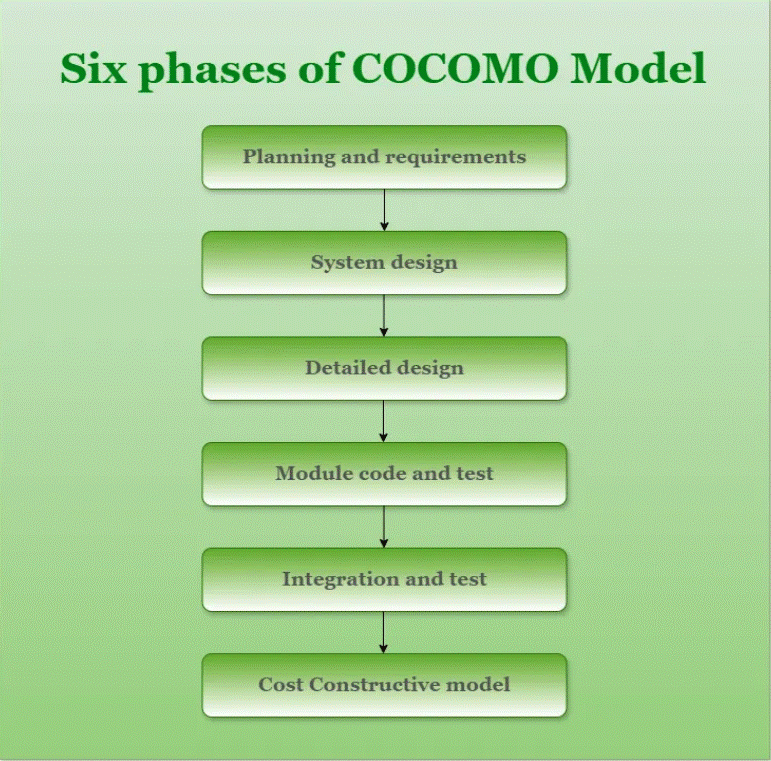
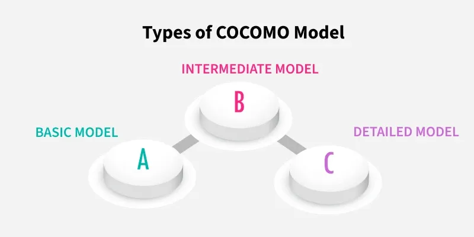

3.6 COCOMO Model
The Constructive Cost Model (COCOMO) was proposed by Barry Boehm in 1981 and is based on the study of 63 projects, which makes it one of the best-documented models in software engineering.
It is a software cost estimation model that helps predict the effort, cost, and schedule required for a software development project. COCOMO belongs to the empirical model category introduced in §3.5 — it uses mathematically derived formulas based on project size measured in KLOC (thousands of lines of code).
What is the COCOMO Model?
- COCOMO is a procedural cost estimate model for software projects and is often used to reliably predict parameters such as size, effort, cost, time, and quality.
- The key parameters that define the quality of any software product — and are also outcomes of COCOMO — are primarily effort and schedule.
- COCOMO helps a project manager prepare a realistic budget, allocate resources, and check project feasibility before full development begins.
Types of projects in the COCOMO model
In the COCOMO model, software projects are categorised into three types based on their complexity, size, and development environment.
- Organic: A project is organic when the required team size is adequately small, the problem is well understood and has been solved before, and team members have nominal experience with the problem domain.
- Semi-detached: A project is semi-detached when vital characteristics such as team size, experience, and knowledge of programming environments lie between organic and embedded. These projects are less familiar and harder to develop than organic ones and need more experience, guidance, and creativity — for example, compilers or embedded systems.
- Embedded: A project falls under embedded when it requires the highest level of complexity, creativity, and experience. Such software needs a larger team, and developers must be sufficiently experienced and creative to handle strict requirements and complex interfaces — for example, flight control software.
Comparison of project types in COCOMO
| Aspect | Organic | Semi-detached | Embedded |
|---|---|---|---|
| Project size | Typically ranges from 2 to 50 KLOC. | Usually falls between 50 and 300 KLOC. | Generally 300 KLOC and above. |
| Complexity | Complexity is low because the problem is familiar. | Complexity is medium with moderate innovation required. | Complexity is high with strict and rigorous requirements. |
| Team experience | The team is highly experienced in the problem area. | The team includes both experienced and inexperienced staff. | The team has mixed experience but must include domain experts. |
| Environment | The environment is flexible with fewer constraints. | The environment is somewhat flexible with moderate constraints. | The environment is highly rigorous with strict requirements. |
| Effort equation (example) | E = 2.4 × (400)1.05 | E = 3.0 × (400)1.12 | E = 3.6 × (400)1.20 |
| Example | A simple payroll system is a typical organic project. | A new system interfacing with existing systems is semi-detached. | Flight control software is a classic embedded project. |
Structure of the COCOMO model
Detailed COCOMO incorporates all characteristics of the intermediate version with an assessment of each cost driver's impact on every step of the software engineering process.
- In detailed COCOMO, the whole software is divided into different modules, COCOMO is applied to each module separately, and the individual effort estimates are summed to get the total project effort.

Phases of the COCOMO model
- Planning and requirements: This initial phase involves defining the scope, objectives, and constraints of the project and developing a project plan that outlines the schedule, resources, and milestones.
- System design: In this phase, the high-level architecture of the software system is created, including major components, their interactions, and the data flow between them.
- Detailed design: This phase breaks the system design into detailed specifications for each module, including data structures, algorithms, and interfaces.
- Module code and test: This involves writing the actual source code for each module, implementing algorithms, and developing interfaces as defined in the detailed design.
- Integration and test: This phase combines individual modules into a complete system and ensures they work together as intended.
- Cost constructive model: The final phase applies the Constructive Cost Model to refine the cost and effort estimate based on all project characteristics gathered in earlier phases.
Different models of COCOMO have been proposed to predict cost estimation at different levels, based on the amount of accuracy required. All models can be applied to a variety of projects, and the project characteristics determine which constants are used in subsequent calculations.
Importance of the COCOMO model
- Cost estimation: COCOMO offers a methodical approach to software development cost estimation, which helps with resource planning and project budgeting.
- Resource management: By taking team experience, project size, and complexity into account, the model supports efficient resource allocation.
- Project planning: COCOMO assists in developing practical project plans with attainable objectives, deadlines, and milestones.
- Risk management: By including risk-related factors through cost drivers, COCOMO helps identify and mitigate potential hazards early in development.
- Support for decisions: During project planning, the model provides a quantitative foundation for choices about scope, priorities, and resource allocation.
- Benchmarking: COCOMO offers a benchmark to compare and assess various software development projects against industry standards.
- Resource optimisation: The model helps maximise the use of resources, which raises productivity and lowers costs.
Types of COCOMO model
There are three types of COCOMO model, each offering a different level of estimation accuracy.

1. Basic COCOMO model
- The Basic COCOMO model is a straightforward way to estimate the effort needed for a software development project using a simple mathematical formula based on project size in KLOC.
- It estimates effort and development time using the following expressions:
- E = a × (KLOC)b → effort in person-months (PM)
- Tdev = c × (E)d → development time in months
- Persons required = Effort ÷ Time
Where E is effort in person-months, KLOC is the estimated size in kilo lines of code, Tdev is development time in months, and a, b, c, d are constants determined by the project category.
| Software project | a | b | c | d |
|---|---|---|---|---|
| Organic projects use constants | 2.4 | 1.05 | 2.5 | 0.38 |
| Semi-detached projects use constants | 3.0 | 1.12 | 2.5 | 0.35 |
| Embedded projects use constants | 3.6 | 1.20 | 2.5 | 0.32 |
- Effort is measured in person-months and depends on KLOC, while development time is measured in months.
- These formulas are used as-is in Basic COCOMO calculations, and because factors such as reliability and team expertise are not considered, the estimate is rough but fast to compute.
Example — Basic COCOMO (400 KLOC):
- Organic: E = 2.4 × (400)1.05 ≈ 1295 person-months; Tdev = 2.5 × (1295)0.38 ≈ 38 months.
- Semi-detached: E = 3.0 × (400)1.12 ≈ 2462 person-months; Tdev = 2.5 × (2462)0.35 ≈ 38 months.
- Embedded: E = 3.6 × (400)1.20 ≈ 4772 person-months; Tdev = 2.5 × (4772)0.32 ≈ 38 months.
The following C++ program implements Basic COCOMO and selects the mode automatically based on project size:
// C++ program to implement Basic COCOMO
#include <bits/stdc++.h>
using namespace std;
int fround(float x) {
x = x + 0.5;
return (int)x;
}
void calculate(float table[][4], char mode[][15], int size) {
float effort, time, staff;
int model;
if (size >= 2 && size <= 50)
model = 0; // organic
else if (size > 50 && size <= 300)
model = 1; // semi-detached
else if (size > 300)
model = 2; // embedded
cout << "The mode is " << mode[model];
effort = table[model][0] * pow(size, table[model][1]);
time = table[model][2] * pow(effort, table[model][3]);
staff = effort / time;
cout << "\nEffort = " << effort << " Person-Month";
cout << "\nDevelopment Time = " << time << " Months";
cout << "\nAverage Staff Required = " << fround(staff) << " Persons";
}
int main() {
float table[3][4] = {2.4, 1.05, 2.5, 0.38,
3.0, 1.12, 2.5, 0.35,
3.6, 1.20, 2.5, 0.32};
char mode[][15] = {"Organic", "Semi-Detached", "Embedded"};
int size = 4;
calculate(table, mode, size);
return 0;
}The mode is Organic
Effort = 10.289 Person-Month
Development Time = 6.06237 Months
Average Staff Required = 2 Persons2. Intermediate COCOMO model
- The Basic COCOMO model assumes effort is only a function of KLOC and mode constants, but in reality factors such as reliability, experience, and capability also affect cost.
- These factors are called cost drivers (multipliers), and the Intermediate model uses 15 such drivers for cost estimation.
Classification of cost drivers and their attributes:
- Product attributes: Required software reliability, size of the application database, and complexity of the product.
- Hardware attributes: Run-time performance constraints, memory constraints, volatility of the virtual machine environment, and required turnaround time.
- Personnel attributes: Analyst capability, software engineering capability, application experience, virtual machine experience, and programming language experience.
- Project attributes: Use of software tools, application of software engineering methods, and required development schedule.
- Each of the 15 attributes can be rated on a six-point scale from very low to extra high, and each rating has a fixed effort multiplier.
- The Effort Adjustment Factor (EAF) is determined by multiplying the effort multipliers of all 15 attributes together.
- EAF is used to refine the Basic COCOMO estimate with the formula: E = a × (KLOC)b × EAF, and Tdev = c × (E)d as before.
| Software project | a | b | c | d |
|---|---|---|---|---|
| Organic projects use Intermediate constants | 3.2 | 1.05 | 2.5 | 0.38 |
| Semi-detached projects use Intermediate constants | 3.0 | 1.12 | 2.5 | 0.35 |
| Embedded projects use Intermediate constants | 2.8 | 1.20 | 2.5 | 0.32 |
3. Detailed COCOMO model
- Detailed COCOMO goes beyond Basic and Intermediate COCOMO by diving deeper into project-specific factors such as team experience, development practices, and software complexity.
- By analysing these factors in more detail across each module and development phase, Detailed COCOMO provides a highly accurate estimation of effort, time, and cost for software projects.
- It is like zooming in on a project's unique characteristics to get a clearer picture of what it will take to complete it successfully.
Case studies and examples
- NASA Space Shuttle software development: NASA used COCOMO to estimate the time and money needed for Space Shuttle software, enabling well-informed decisions on resource allocation and project scheduling.
- Big business software development: Large organisations have widely used COCOMO to project the time and cost of intricate business software systems and to plan resource allocation more effectively.
- Commercial software products: Software firms creating commercial products have used COCOMO to decide on pricing, time-to-market, and resource allocation by accurately calculating development time and cost.
- Academic research initiatives: Research projects have employed COCOMO to estimate the time and expense of creating software prototypes or carrying out experimental studies.
Advantages of the COCOMO model
- COCOMO provides a systematic way to estimate the cost and effort of a software project.
- It can be used to estimate cost and effort at different stages of the development process.
- It helps identify the factors with the greatest impact on project cost and effort.
- It can be used to evaluate the feasibility of a project by estimating the cost and effort required to complete it.
Disadvantages of the COCOMO model
- COCOMO assumes that project size (KLOC) is the main factor determining cost and effort, which may not always be true.
- It does not fully account for the specific characteristics of the development team, which can significantly affect cost and effort.
- It does not provide a precise estimate because it is based on assumptions and averages from historical data.
Best practices for using the COCOMO model
- Recognise the assumptions: Become familiar with COCOMO's underlying assumptions about team experience, size, and complexity, and understand that it offers useful approximations rather than exact predictions.
- Customise the model: Adapt COCOMO's inputs and parameters to your project's unique requirements, including organisational capacity, development processes, and industry standards.
- Utilise historical data: Collect and analyse data from previous projects to verify COCOMO inputs and improve estimation parameters.
- Verify and validate: Compare COCOMO estimates with actual project outcomes and adjust estimation procedures based on feedback and lessons learned.
- Combine with other techniques: Add COCOMO estimates to other methods such as expert judgment, analogous estimation, and bottom-up estimation to triangulate results and reduce bias.
Q: Explain the COCOMO model. Describe the three project types, the three levels of COCOMO, the 15 cost drivers, and solve a Basic COCOMO numerical example.
Model answer points:
- COCOMO (Boehm, 1981): empirical model based on 63 projects; predicts effort (PM), development time (months), and team size from KLOC.
- Three project types: Organic (small, familiar, 2–50 KLOC), Semi-detached (medium, mixed team, 50–300 KLOC), Embedded (large, complex, 300+ KLOC).
- Three levels: Basic (KLOC + mode constants, rough) → Intermediate (adds EAF from 15 cost drivers) → Detailed (per-module, six phases, most accurate).
- Basic formulas: E = a(KLOC)b, Tdev = c(E)d, team = E/T. Constants — organic (2.4, 1.05, 2.5, 0.38), semi (3.0, 1.12, 2.5, 0.35), embedded (3.6, 1.20, 2.5, 0.32).
- Intermediate: E = a(KLOC)b × EAF; 15 cost drivers in 4 categories (product, hardware, personnel, project); each rated very low to extra high.
- Detailed: software divided into modules; COCOMO applied per module across six phases; efforts summed.
- Numerical: state KLOC, pick mode, substitute constants, compute E then Tdev then team size.
- Limitations: depends on KLOC accuracy, rough in Basic form, based on averages.